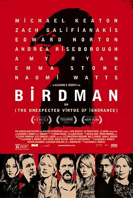

鸟人 / Birdman or (The Unexpected Virtue of Ignorance)
又名：飞鸟侠(港) / 无知的意外之美 / Birdman
好多好多长镜头，诺叔只要露面就是抢镜
作品信息
| 导演 | 亚历杭德罗·冈萨雷斯·伊尼亚里图 |
| 编剧 | 亚历杭德罗·冈萨雷斯·伊尼亚里图 / 尼古拉斯·迦科波恩 / 亚历山大·迪内拉里斯 / 阿尔曼多·博 |
| 主演 | 迈克尔·基顿 / 爱德华·诺顿 / 艾玛·斯通 / 扎克·加利凡纳基斯 / 安德丽娅·赖斯伯勒 / 娜奥米·沃茨 / 艾米·莱安 / 梅里特·韦弗 / 克拉克·米德尔顿 / 琳赛·邓肯 |
| 类型 | 剧情 / 喜剧 |
| 制片国家/地区 | 美国 / 墨西哥 |
| 语言 | 英语 |
| 上映日期 | 2014-08-27(威尼斯电影节) / 2014-11-14(美国) |
| 片长 | 119分钟 |
| IMDb | tt2562232 |
最后一次看到是 2026-08-12T21:12:59+08:00 · 豆瓣原页